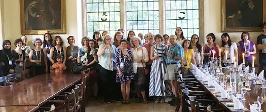
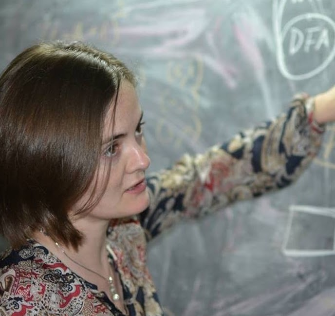

Workshops

The WiL Workshop provides an opportunity to increase awareness of the valuable contributions made by women in the area of logic in computer science. Its main purpose is to promote the excellent research done by women, with the ultimate goal of increasing their visibility and representation in the community. Our aim is to:
- provide a platform for female researchers to share their work and achievements;
- increase the feelings of community and belonging, especially among junior faculty, post-docs and students through positive interactions with peers and more established faculty;
- establish new connections and collaborations;
- foster a welcoming culture of mutual support and growth within the logic research community.
We believe these aspects will benefit women working in logic and computer science, particularly students and early-career researchers.
Keynote speakers to be announced


A normalized edit distance on finite and infinite words
Dana Fisman
Embedding Quantitative Properties of Call-by-Name and Call-by-Value into Call-by-Push-Value
Delia Kesner
Intersection types for probabilistic computation
Simona Ronchi Della Rocca
Zero-one laws for provability logic and its transitive sisters
Rineke Verbrugge
Nominal Syntax with Atom Substitutions
Maribel Fernández

An algebraic framework to reason about concurrency
Alexandra Silva
WiL 2019
Vancouver, Canada
Computing with Molecules
Anne Condon
The impact of duality
Zena M. Ariola
Logic and sofware engineering: are we nearly there yet?
Perdita Stevens
POPLMark Reloaded: Mechanizing Logical Relations Proofs
Brigitte Pientka
Differential Privacy and Applications to Location Privacy
Catuscia Palamidessi
Strategies for Modal Theorem-Proving
Claudia Nalon
No matching items